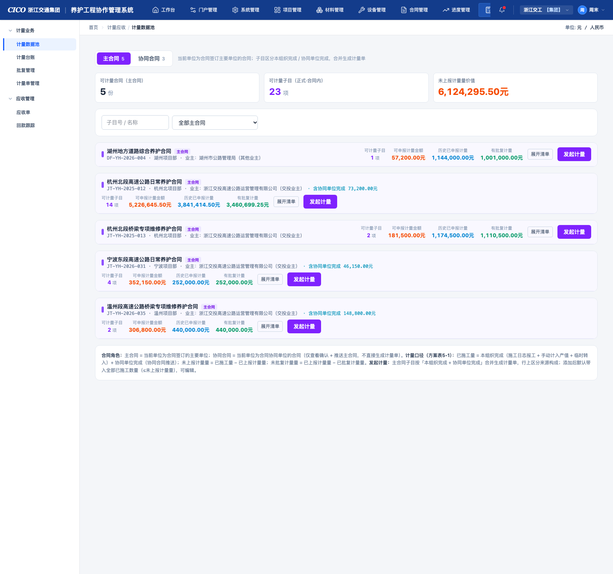
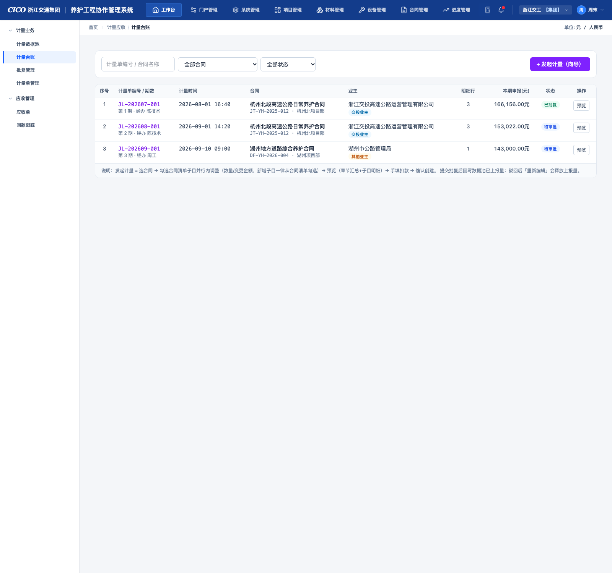
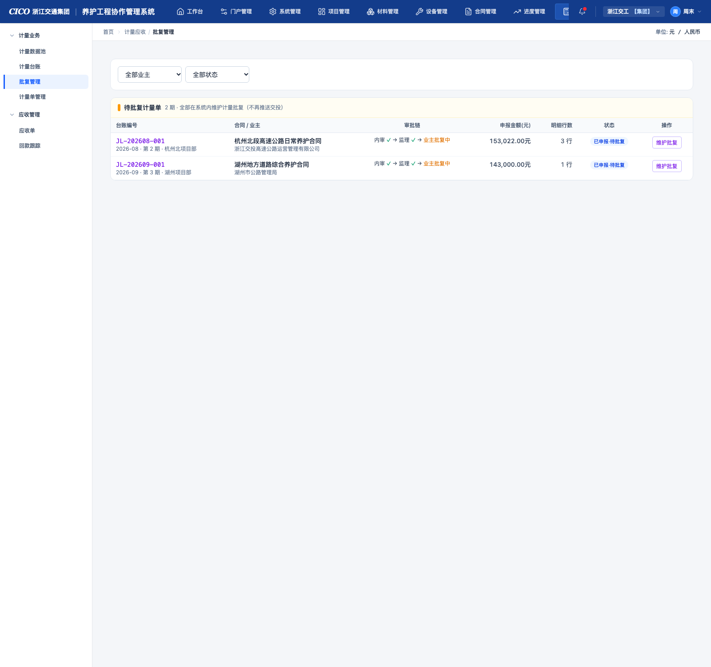
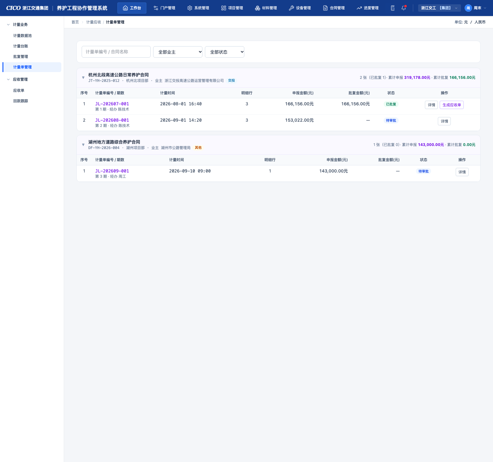
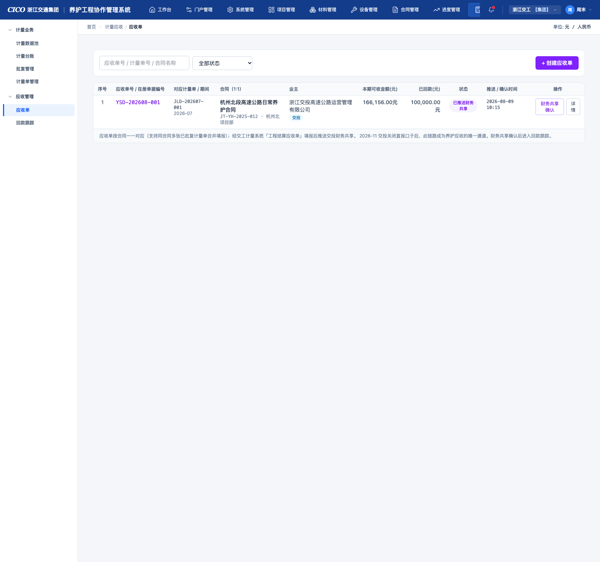
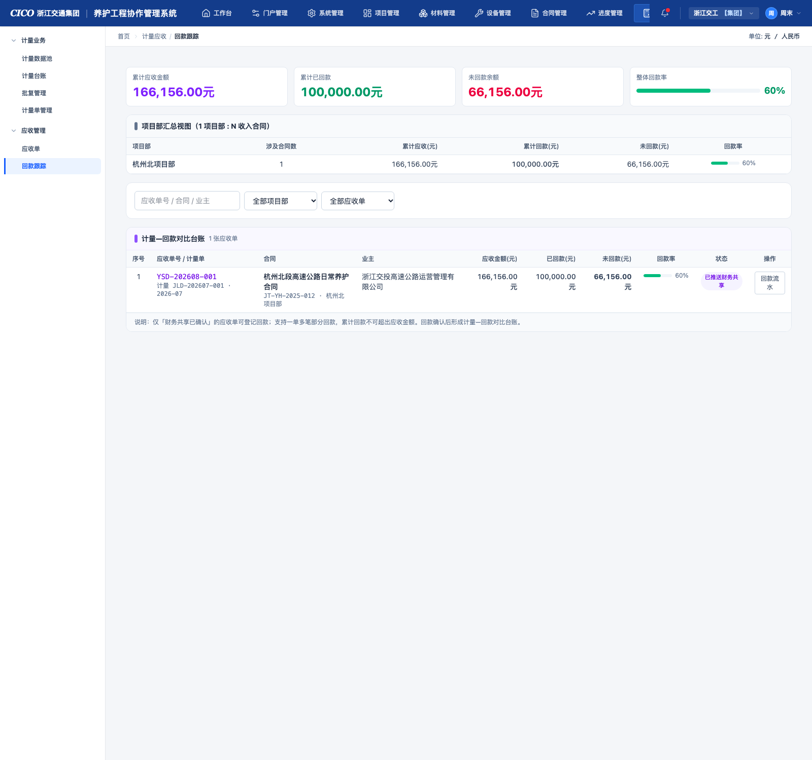

公路养护工程按合同周期向业主申报计量并收取工程款。本模块覆盖从产值形成到资金回笼的完整业务链路：施工产值沉淀为可计量工程量 → 按期发起计量申报 → 系统内维护业主批复 → 依据批复生成计量凭证与应收单 → 跟踪业主回款，实现"计量—应收—回款"全过程线上化、可追溯。
| 一级菜单 | 分组 | 页面 | 定位 |
|---|---|---|---|
| 计量应收 | 计量业务 | 计量数据池 | 按合同归集可计量子目与工程量，发起计量的入口 |
| 计量台账 | 计量单全生命周期管理（草稿/待审批/已批复/已驳回） | ||
| 批复管理 | 对已申报计量单维护批复结果 | ||
| 计量单管理 | 以合同维度查看已申报计量单，已批复的可生成应收单 | ||
| 应收管理 | 应收单 | 应收单填报、推送财务共享与确认 | |
| 回款跟踪 | 回款登记/流水管理，计量-回款对比 |
JL-年月-序号、计量凭证 JLD-年月-序号、应收单 YSD-年月-序号，按合同维度递增期数。计量数据池是各收入合同"可计量工程量"的总库：按合同归类展示正式·合同内子目，汇总其总量、已施工量、已上报/已批复计量量，是发起计量的唯一数据来源。同时区分主合同（当前单位为合同签订主要单位）与协同合同（当前单位为合同协同单位）：主合同可直接发起计量；协同合同仅查看确认并推送量至主合同，不直接生成计量单。
| 卡片 | 口径 |
|---|---|
| 可计量合同 | 主合同数量（份） |
| 可计量子目 | 正式·合同内子目总数（项） |
| 未上报计量量价值 | 全部可计量子目未上报计量量 × 综合单价的合计（元） |
子目号/名称关键词搜索 + 合同下拉筛选（全部主合同）。
每个合同一张卡片行，展示：合同名称（主合同标签）、合同编号、项目部、业主（交投业主/其他业主）、含协同单位完成金额（有则显示）、可计量子目数、可申报计量金额（有未上报量时橙色高亮）、历史已申报计量、有批复计量，右侧操作按钮：展开清单 / 发起计量。

图 2-1 计量数据池（主合同页签）：顶部汇总卡、合同卡片与"展开清单/发起计量"操作
点击"展开清单"在合同卡片下方展开子目明细表，按章节层级分组（100 总则 / 200 路基 / 300 路面 …），每行展示：子目号、子目名称、单位、综合单价（元）、子目总量、已施工量构成（施工日志报工 / 手动计入产值 / 临时转入 / 协同单位完成）、已上报计量量、未上报计量量、批复计量量。
从合同卡片点击「发起计量」进入向导（计量台账页的「+ 发起计量（向导）」同入口）：
| 步骤 | 页面内容 | 交互与规则 |
|---|---|---|
| Step 1 选择合同 |
合同列表（仅主合同，含可计量子目数、可申报计量金额） | 选择一份合同并设定计量时间段（起止日期），进入下一步；已预选合同的入口（如从数据池发起）跳过本步。 |
| Step 2 选择并调整子目 |
按章节分组的合同清单子目 + 已选计量子目列表 | ① 勾选合同清单子目加入本期计量，添加后默认带入全部未上报计量量（可编辑，不可超已施工量）；② 行内可调整数量与变更金额；③ 新增子目一律从合同清单勾选（"添加其他子目"弹窗）；④ 主合同子目按"本组织完成 + 协同单位完成"合并计量，行上区分来源构成。 |
| Step 3 预览与确认 |
章节汇总（图一）+ 子目明细（图二）+ 扣款/调整项 + 经办技术员 | ① 章节汇总：按章节合计本期完成金额，含安全生产费单列；② 子目明细：子目号/名称/单位/单价（元）/合同数量/本期完成数量/本期完成金额/到上期末累计；③ 手填扣款项：价格调整、索赔、违约罚款、考核扣款/奖励、迟付款利息、动员预付款及其扣回、材料设备垫付及其扣回、保留金；④ 确认创建生成计量单草稿。 |
计量单的全生命周期管理：查看各合同各期计量单，草稿可编辑/提交批复，已驳回可重新编辑，全状态可预览详情。台账状态即计量单的流程状态。
计量单编号/合同名称搜索 + 合同下拉 + 状态下拉（草稿 / 待审批 / 已批复 / 已驳回），右侧主操作按钮「+ 发起计量（向导）」。
| 列 | 内容 |
|---|---|
| 计量单编号 / 期数 | 编号（JL-…）、第 N 期、经办人 |
| 计量时间 | 计量单创建时间（精确到分钟） |
| 合同 | 合同名称、合同编号、项目部 |
| 业主 | 业主名称 + 业主类型标签（交投业主/其他业主） |
| 明细行 | 子目明细行数 |
| 本期申报(元) | 本期完成金额合计 |
| 状态 | 草稿待审批已批复已驳回 |
| 操作 | 按状态显示（见 3.3） |

图 3-1 计量台账：筛选区 + 列表（计量时间 = 创建时间；状态：草稿/待审批/已批复/已驳回）
| 状态 | 可执行操作 | 流转说明 |
|---|---|---|
| 草稿 | 编辑（回导向导 Step2）、提交批复、删除、预览 | 提交批复后状态变为待审批，同时数据池子目的"已上报计量量"回写增加 |
| 待审批 | 预览 | 进入批复管理维护批复；批复通过 → 已批复；驳回 → 已驳回 |
| 已批复 | 预览 | 终态；批复结果（批复数量/批复金额/附件）见批复管理，凭证自动生成 |
| 已驳回 | 重新编辑、删除、预览 | 重新编辑回向导调整后可再次提交；被驳回单据占用的上报量自动释放回数据池 |
「预览」打开计量单详情弹窗：单据头（合同/业主/批复方式：系统内维护批复/经办技术员）+ 章节汇总 + 子目明细 + 扣款项。
对已申报（待审批）的计量单统一在系统内维护业主批复：可逐行调整计量批复数量、维护最终批复金额与批复意见、上传批复附件；驳回则释放上报量退回台账重新编辑。页面仅展示待批复计量单（已批复/已驳回结果在计量台账与计量单管理中查看）。
业主类型下拉 + 状态下拉（已申报·待批复 / 批复中）。
| 列 | 内容 |
|---|---|
| 台账编号 | 编号、所属期间、第 N 期、项目部 |
| 合同 / 业主 | 合同名称 + 业主名称 |
| 审批链 | 内审 ✓ → 监理 ✓ → 业主批复中 |
| 申报金额(元) | 本期申报金额 |
| 明细行数 / 状态 / 操作 | 行数、状态标签、维护批复按钮 |
点击行或「维护批复」按钮打开维护批复弹窗。

图 4-1 批复管理：仅待批复计量单，全部在系统内维护计量批复（不再推送交投）
| 列 | 说明 |
|---|---|
| 章节 / 子目 / 单位 | 只读 |
| 单价 | 综合单价（元） |
| 计量数量 | 本期申报数量（只读） |
| 计量批复数量 | 可编辑输入框，默认 = 计量数量，可逐行调整（不可超计量数量）；调整后该行批复金额自动 = 批复数量 × 单价 |
| 批复金额 | 行级批复金额（自动计算，只读） |
驳回（直接驳回，单据回已驳回状态）/ 取消 / 确认批复。
以合同为维度分组查看已申报（待审批）与已批复的计量单，是计量结果的业务视图；点击计量单查看详情；仅已批复的计量单可生成应收单，进入应收流程。本页面不提供归档操作。
计量单编号/合同名称搜索 + 业主下拉 + 状态下拉（待审批 / 已批复）。

图 5-1 计量单管理：按合同分组展开计量单；已批复行显示"生成应收单"按钮
点击行或「详情」打开：单据头信息 + 章节汇总 + 子目明细 + 扣款项；弹窗底部操作：已批复单据显示生成应收单 + 关闭，其余仅关闭。
承载"本期应向业主收取的工程款"：依据已批复计量单填报工程结算应收单，推送交投财务共享确认；确认后进入回款跟踪。应收单按合同一一对应（支持同合同多张已批复计量单合并填报）。
应收单号/计量单号/合同名称搜索 + 状态下拉，右侧「+ 创建应收单」按钮（向导入口）。
| 列 | 内容 |
|---|---|
| 应收单号 / 在册单据编号 | YSD-… 编号 + 在册编号 |
| 对应计量单 / 期间 | 关联计量凭证编号与期间 |
| 合同（1:1） | 合同名称、编号、项目部 |
| 业主 | 业主名称 + 类型标签 |
| 本期应收金额(元) | 本期可收金额（含税） |
| 已回款(元) | 该单累计已回款 |
| 状态 | 待填报 → 已推送财务共享 → 财务共享已确认 |
| 推送 / 确认时间 | 流程时间戳 |
| 操作 | 待填报：推送 / 编辑 / 删除；已推送：财务共享确认；全部：详情 |

图 6-1 应收单：列表与"财务共享确认"操作；右上角"+ 创建应收单"
入口：本页「+ 创建应收单」或计量单管理「生成应收单」（预填关联计量单）。向导步骤：
| 状态 | 可执行操作 | 说明 |
|---|---|---|
| 待填报 | 推送、编辑、删除、详情 | 推送后状态 → 已推送财务共享，记录推送时间 |
| 已推送财务共享 | 财务共享确认、详情 | 模拟交投财务共享回传确认；确认后 → 财务共享已确认，进入回款跟踪 |
| 财务共享已确认 | 详情 | 回款跟踪页可对该单登记/新增回款 |
跟踪财务共享已确认应收单的回款进展：登记回款、维护回款流水，形成"计量-回款"对比台账，支持一单多笔部分回款。
累计应收金额 / 累计已回款 / 未回款余额 / 整体回款率（进度条可视化）。
按项目部汇总：项目部、涉及合同数、累计应收(元)、累计回款(元)、未回款(元)、回款率（进度条）。
应收单号/合同/业主搜索 + 项目部下拉 + 应收单下拉。
| 列 | 内容 |
|---|---|
| 应收单号 / 计量单 | 应收单编号 + 关联计量凭证与期间 |
| 合同 / 业主 | 合同名称、编号、项目部；业主名称 |
| 应收金额(元) / 已回款(元) / 未回款(元) | 金额三列，未回款红色突出 |
| 回款率 | 进度条 + 百分比 |
| 状态 | 应收单流程状态 |
| 操作 | 登记回款（仅财务共享已确认）、回款流水（全部） |

图 7-1 回款跟踪：统计卡 + 项目部汇总 + 计量-回款对比台账
点击「回款流水」打开该应收单的回款流水弹窗：
列表行「登记回款」为独立入口，打开登记回款弹窗录入单笔回款（字段同上）。
| 单据 | 编号格式 | 示例 |
|---|---|---|
| 计量单 | JL-年月-三位序号 | JL-202608-001 |
| 计量凭证 | JLD-年月-三位序号 | JLD-202608-001 |
| 应收单 | YSD-年月-三位序号 | YSD-202608-001 |
| 回款流水 | HK-年月日-序号 | HK-20260901-01 |
| 术语 | 释义 |
|---|---|
| 计量 | 按期向业主申报本期完成的工程量与金额，作为结算依据 |
| 批复 | 业主对计量申报的审核确认结果（含行级批复数量与最终批复金额） |
| 计量凭证 | 计量单批复通过后自动生成的凭证单据，记录申报量/批复量双口径 |
| 主合同 / 协同合同 | 当前单位为合同签订主要单位 / 协同单位的合同 |
| 数据池回写 | 提交/批复/驳回时自动更新数据池子目的已上报量、已批复量 |
| 扣款净额 | 扣款项合计（索赔+罚款+考核扣款+迟付款利息+各项扣回+保留金−调整奖励项） |